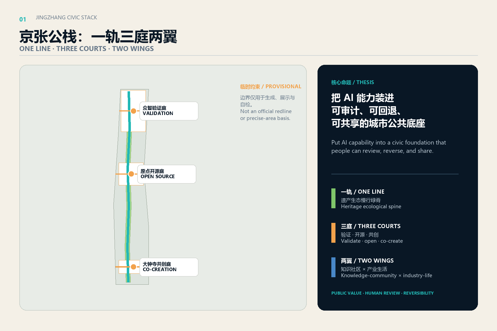
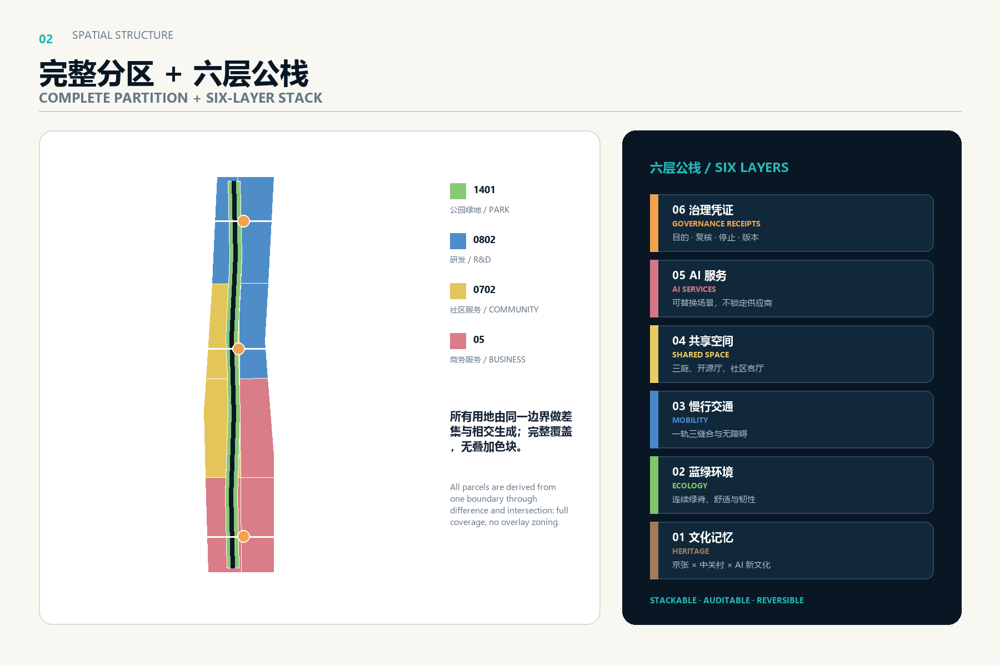
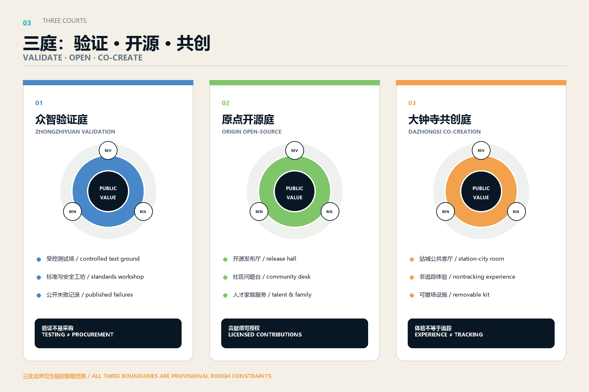
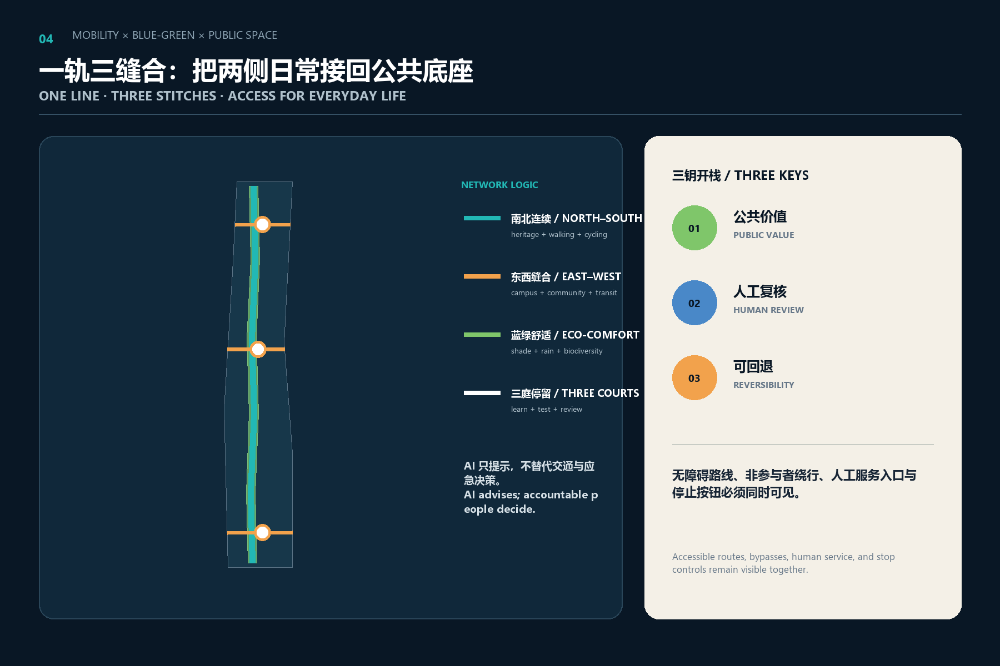
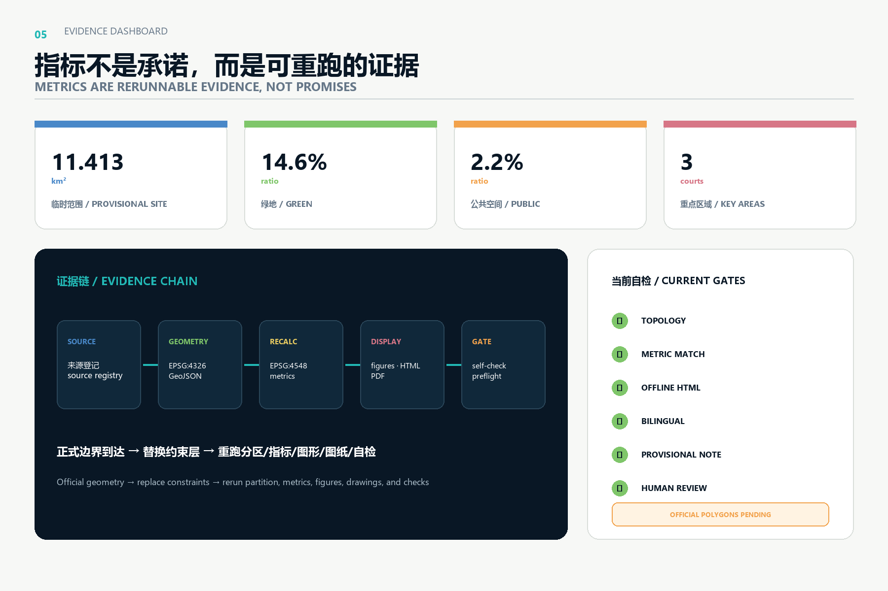

JINGZHANG CIVIC STACK / 京张公栈
A reviewable, reversible, and shareable civic foundation along the Jing-Zhang heritage park: one line, three courts, two wings, and a six-layer urban stack.
JINGZHANG CIVIC STACK / 京张公栈
Core judgment: An AI innovation belt should first be a civic foundation that anyone can understand, enter, question, and stop. It should not be a sequence of closed technology compounds. CIVIC STACK combines six interfaces—heritage, ecology, mobility, shared space, AI services, and governance receipts—so every spatial move answers who benefits, who reviews it, when it stops, and how the place is restored.
Design Basis and Source List
The proposal is governed by the official announcement, the cleared Agent Taskbook, the repository site package, the source registry, and local snapshots of professional standards. GeoJSON is exchanged in EPSG:4326 and areas are recomputed in EPSG:4548. The announcement provides text descriptions and area values for a 43.6 km² coordinated research area, an approximately 11.4 km² overall design area, and three key areas. The repository currently supplies only provisional rough polygons, so this package preserves provisional_constraint, official_boundary=false, and explicit recalculation triggers 来源 来源 深度.
Evidence passes three gates. First, data/source_registry.json defines eligible uses. Second, each record states publisher, retrieval date, transformation, and limitation. Third, a claim must be independently checkable against geometry, metrics, or a primary page. Six international cases contribute transferable mechanisms only; none supplies a boundary, statutory control, investment assumption, or performance promise for Haidian. All five figures are generated from this package; no external image, logo, portrait, or proprietary drawing is reused 来源 标准.
Missing information is not permission to fabricate precision. Official polygons, existing-building surveys, ownership, road redlines, rail interfaces, utilities, heritage constraints, fire safety, height, and development intensity remain pending. Building footprints therefore represent civic-stack prototypes; road features are conceptual slow-mobility and stitch centerlines; land use is a structural proposal. Professional teams must replace each pending layer with a dated and traceable source before statutory or engineering use 深度 空间数据.

Three-Level Scope Framework
The three levels progress from strategy to structure to prototype. The 43.6 km² research area coordinates industry, talent, compute, data, scenarios, and international networks without inventing new legal boundaries. The approximately 11.4 km² design area carries the complete one-line, three-court, two-wing structure. The three key areas develop public-space rooms, building prototypes, mobility interfaces, operating workflows, and test governance for later professional development. All levels share one evidence and risk system 来源 深度.
The “one line” is a heritage ecological and slow-mobility spine. The “three courts” are Zhongzhiyuan Validation Court, Origin Open-Source Court, and Dazhongsi Co-Creation Court. The “two wings” are a western knowledge/community service wing and an eastern industry/urban-life scenario wing. CIVIC STACK is not another fenced campus: it is a public interface through which research, daily life, business, and services can exchange results, questions, and feedback 空间数据 深度.
All three scopes use the same six layers. Heritage records the Jing-Zhang and Zhongguancun narratives; ecology organizes comfort and continuity; mobility supports walking, cycling, accessibility, and interchange; space provides open-source halls, test courts, and community rooms; services host replaceable AI scenarios; governance publishes purpose, data, human review, stop conditions, and versions. When official geometry arrives, the constraint layer can be replaced and every partition, metric, figure, and schedule rerun 空间数据 指标.
Coordinated Research Area: Industry and Future City Research
The ecosystem follows a five-step loop: a public or industry problem enters; capabilities form a team; a controlled civic test runs; evidence leaves the stack; and a professional body decides whether further scale is warranted. Land, space, finance, talent, compute, data, and scenarios are not described as committed resources. They become seven queryable lists: needs, capabilities, spaces, data permissions, risks, reviews, and exit actions. Zhongzhiyuan focuses on full-stack validation, Origin on open collaboration and transfer, Dazhongsi on urban product experience, with the two wings returning services and everyday problems 来源 标准.
Six primary-source cases supply six mechanisms. Singapore one-north links research, startups, living, learning, and living-lab tests. Barcelona 22@ combines economic renewal with housing, public space, and mobility. Cambridge Kendall Square and the Foundry connect innovation to community access and adaptive reuse. Testbed Helsinki separates testing from procurement and involves end users. STATION F concentrates startup services in an industrial heritage structure. Rotterdam Makers District connects making, circular production, city, and port. Jing-Zhang borrows mechanisms, never their density, finance, governance authority, or performance claims 来源 来源 来源.
| Case | Transferable mechanism | Jing-Zhang move | Local confirmation required |
|---|---|---|---|
| one-north | Work-live-play-learn and testbed links | Shared tests and service lists across three courts | Land, operators, data permission |
| Barcelona 22@ | Industry, housing, public space, mobility renewal | Prevent a single-use office corridor | Housing, services, delivery body |
| Kendall/Foundry | Community-facing innovation and reuse | Public ground floors and courses | Ownership, structure, fire safety |
| Helsinki Testbed | Real-world tests; testing is not procurement | Three-key gate and stop rules | Procurement, privacy, ethics |
| STATION F | Concentrated services in heritage space | Origin open-source hall and shared back office | Heritage, capacity, operating cost |
| Rotterdam Makers | Circular production and networked making | Reversible renewal and component passports | Supply chains, logistics, environment |
The future city is not defined by more sensors but by clearer service contracts. Public value, human review, and reversibility are the “three keys” needed to open a scenario. If one is missing, the idea remains an offline exercise. Talent attraction is treated as a civic experience—walkable daily life, transparent testing, family services, cross-institution learning, and visible contributions—not merely as office supply 深度 来源.
Overall Design Area: Urban Renewal and Regulatory-Plan-Level Urban Design
The overall structure combines a 1401 park/open-space spine, four north-south functional bands, two wings, and three east-west public stitches. Every land-use polygon is derived through intersection and difference from one provisional site polygon, creating complete coverage without overlap. The spine is part of the partition, not a translucent overlay. The north concentrates 0802 research and validation, the middle combines 0802 open transfer with 0702 talent-community support, and the south combines 05 business services with urban experience 空间数据 标准 深度.
Renewal follows “survey, classify, decide.” A later building passport records age, structure, use, ownership, heritage value, ground-floor interface, energy, fire safety, accessibility, and user views before an item enters retain, repair, adaptive reuse, reversible addition, or professional-review lists. The twelve submitted BLDG features only show modular civic-stack prototypes around the three courts. They do not identify existing buildings or prescribe demolition or construction 空间数据 深度.
Development intensity, height, density, setbacks, and total floor area remain pending official inputs. Professional development should compare statutory control, existing capacity, public benefit, and operational need instead of using a technology narrative to justify intensity. Interfaces facing the heritage park should prioritize continuous public ground floors, visible research and learning, and low-disturbance evening use; detailed capacity elsewhere follows official and field evidence 深度 深度 指标.

Detailed Design of Key Areas
Zhongzhiyuan Validation Court turns full-stack capability into publicly understandable validation. Its reference scheme combines a reservable controlled test area, standards and safety workshops, a public results gallery, a low-carbon equipment court, and an east-west walking stitch. Every output carries a version, scope, failure set, and human-review note. Passing a test does not create a procurement, approval, or deployment decision 空间数据 来源.
Origin Open-Source Court turns campus-adjacent knowledge into projects that residents and developers can join. It combines an open-source release hall, light prototype workshop, community problem desk, intellectual-property and compliance advice, talent/family service, and a managed public ground floor. The stitch prioritizes links among campuses, neighborhoods, transit, and the spine. Ownership, fire safety, and survey evidence must precede any building intervention 空间数据 来源.
Dazhongsi Co-Creation Court places AI-native products in a real but controlled urban setting. Station-city links, four-quadrant walking, an urban living room, international presentation, and device experience share one public-space system. Commercial services do not depend on individual movement histories; event information is aggregated, minimized, short-lived, and reviewed. Engineering conclusions about stations, roads, or utilities remain professional prerequisites 空间数据 深度.
| Court | Spatial kit | First reversible tests | Public return |
|---|---|---|---|
| Zhongzhiyuan Validation | Test ground, standards workshop, results gallery, low-carbon court | Robots, edge models, energy advice | Published failures and validation methods |
| Origin Open-Source | Release hall, workshop, community desk, talent services | Open collaboration, accessible wayfinding | Licensed methods and human service access |
| Dazhongsi Co-Creation | Station-city room, experience street, international forum | Devices, consumer service, multilingual events | Public-space improvement and removable equipment |

All courts share a test passport: purpose, users, location, data, duration, risk, human review, complaint channel, stop threshold, restoration, and evidence-release date. Work advances from low-risk offline exercise to controlled-site test to time-limited public trial. The passport is a conceptual operating reference that still needs a responsible entity, professional development, and applicable procedures 标准 深度.
AI Innovation Ecosystem, Personas, and AI+ Scenarios
Five core personas are open-source researchers; startups and small teams; nearby residents and caregivers; university students and young talent; and city operations/public-service staff. Visitors and international participants form a cross-scenario sixth profile. Needs include public collaboration, short tests, focused work, family-friendly and accessible services, evening safety, human assistance, international exchange, and affordable daily life. Personas summarize design needs and never identify individuals 来源 深度.
| Scenario card | Place and users | Minimal data and human review | Stop or rollback |
|---|---|---|---|
| 01 Accessible slow-mobility assistant | Spine; elders, wheelchairs, visitors | Human-audited obstacle map; on-device computation | Stop on wrong routing or missing human channel |
| 02 Crowd advice without tracking | Court entrances; everyone | Zone-level aggregate counts only | Stop if anonymity or accuracy fails |
| 03 Multilingual heritage guide | Heritage nodes; visitors, students | Public sources and human curation | Remove unresolved factual claims |
| 04 Community issue triage desk | Origin; residents, service staff | Voluntary, revocable reports; human dispatch | Return to human desk without accountable owner |
| 05 Enterprise service copilot | Wings; small firms | Firm-provided documents; human confirmation | Stop on secrets or automatic commitments |
| 06 Facility maintenance assistant | Spine; operators | Work orders plus field confirmation | Stop when errors affect safety |
| 07 Microclimate comfort advice | Green spine; walkers, cyclists | Public environmental data; no identities | Stop on sensor drift |
| 08 Multilingual event collaborator | Courts; international participants | Explicitly authorized meeting content | Stop without notice or human host |
| 09 Open contribution map | Origin; developers | Voluntary project and license records | Hide disputed copyright or attribution |
| 10 Smart-device experience bench | Dazhongsi; public and firms | Isolated sandbox data | Remove on unapproved network access |
| 11 Low-carbon operations advice | Zhongzhiyuan; facility staff | Aggregated energy data; human control | Roll back on comfort or safety impact |
| 12 Service handoff to people | All service nodes; everyone | Service-state records only | Stop if no equivalent human route exists |
Three industry validation scenarios meet the taskbook requirement: service robots coexisting with accessibility users in a controlled area; edge models tested under disconnection, degradation, privacy, and energy constraints; and building/public-facility energy advice rehearsed offline in a digital twin. Each defines pass criteria and failure records before any time-limited field step. A passed test is not a procurement, approval, or scale decision 空间数据 标准.
The ecosystem map links compute, models, tools, vertical applications, services, and public feedback. Every link records input permission, model version, accountable reviewer, output limitation, and feedback handling. Public space does not collect continuous personal trajectories. Enterprise services do not transform inference into policy, finance, or government commitment. Governance is evaluated through passport coverage, access to human review, completed stop exercises, and resolved public issues rather than unverifiable output or company counts 指标 深度.
Land Use, Building Scale, and Retain-Renovate-Demolish Strategy
Land use uses traceable national-style codes: 1401 park/open space forms the spine; 0802 research covers the north and the eastern side of Origin; 0702 community services cover the western middle; and 05 business services cover the south and urban-experience wing. It is a structural proposal derived from provisional geometry. Its areas support topology checks, not statutory indicators. Shared edges come from one Boolean workflow, avoiding gaps and overlaps created by independent drawing 标准 空间数据.
The building strategy proceeds in this order: retain value, add interfaces, reduce barriers, and use reversible increments. A future survey puts heritage, structure, use, carbon, ownership, and user views into building passports. Valuable fabric is retained and repaired; sound but closed ground floors may receive interface renewal; temporary needs use removable units and shared schedules; major change enters multidisciplinary review. The twelve prototypes show only scale and court relationships, not parcel-level decisions 空间数据 深度.
Total floor area, FAR, height, density, and setbacks remain pending. Prototype footprint area cannot be extrapolated to the district. Drawings distinguish provisional constraints, design structure, and professional prerequisites. Any later number must bind to a source file, scope, approval status, formula, and version date 指标 深度.
Transport, Rail, Municipal Infrastructure, and Public Services
The mobility system is one continuous slow-mobility line, three priority east-west stitches, and three transit/interchange problem registers. The main line prioritizes walking, cycling, accessibility, and heritage experience. The stitches address the two sides of Zhongzhiyuan, campus-community connections at Origin, and the four quadrants around Dazhongsi. roads.geojson contains conceptual centerlines, not road redlines or bridge/tunnel feasibility. Field work must add counts, gradients, crossings, parking, bicycle storage, fire access, and construction conditions 空间数据 深度.
Municipal and digital infrastructure combines shared service rooms, edge nodes, plug-out equipment, and staffed counters. Edge computing can support local inference and privacy, but electricity, heat, noise, network, and security require engineering checks. Public services retain in-person, telephone, and manual routes. Infrastructure interfaces are designed with ground floors, courts, and maintenance access, avoiding cabinets and sensors as decorative symbols 深度 标准.

Transport AI supplies advice and anomaly alerts only; qualified people review signal timing, emergencies, and service decisions. Accessibility routes must be co-tested with wheelchair users, people with visual or hearing disabilities, elders, stroller users, and people with temporary mobility constraints. Algorithmic scoring never reduces the basic right to pass. Open Issues have already raised provisional-location concerns, so station-city links remain a problem list with an explicit relocation trigger 来源 深度.
Blue-Green Network, Public Space, and Urban Character
The blue-green concept uses an 88 m generation buffer to create a continuous spine and expands it into three rooms for staying, learning, and controlled testing. The width is a geometry parameter, not a statutory green line or engineering control. The spine combines infiltration, shade, stormwater thinking, walking, cycling, activity, and low-disturbance tests; river, flood, tree, soil, utility, and biodiversity evidence must revise it later 空间数据 指标 深度.
Public space is “public by default, tests zoned, exit visible.” Equipment zones and free-use areas use legible ground and lighting language. Test hours, purpose, data, contact, and stop action are visible. Nonparticipants receive a bypass and equivalent service. The courts avoid object-like landmark buildings and instead establish a public ritual: read the passport on entry, leave feedback by choice, and inspect results later 空间数据 标准.
Three AI pilgrimage landmarks are conceptual public-art and information systems. The “Century Algorithm Ruler” aligns railway time with model versions at Zhongzhiyuan. The “Open-Source Ring” displays licensed community contributions at Origin. The “Civic Echo Bell” shows anonymized aggregate status of urban issues at Dazhongsi. The honor system displays only licensed, verifiable, and removable contributions. A logo direction uses two parallel lines and six stacked cells to form a dual reading of JZ and the Chinese idea of public sharing; no commercial typeface is locked in 来源 深度.
The cultural story has three chapters: rail made distance reachable; Zhongguancun made knowledge collaborative; AI should make city services reviewable. Wayfinding uses heritage brown, ecological green, civic cyan, and risk orange. Heritage is never a technology backdrop. Public history and human curators control factual content, while AI may support multilingual and accessible interpretation 来源 深度.
Renewal Projects, Implementation Policy, and Phasing
The near term prioritizes light, reversible, measurable actions: CS-01 official-geometry replacement and recalculation; CS-02 a co-tested slow-mobility/accessibility issue map; CS-03 test passports and public notice prototypes for the three courts; and CS-04 an operating rehearsal for the Origin open-source hall. Once official boundary, ownership, and engineering evidence arrive, the middle term can consider stitches, public ground floors, and shared facilities. Building intensity, station engineering, and stable operations remain long-term questions 空间数据 深度.
| Project | Type | Success evidence | Prerequisite |
|---|---|---|---|
| CS-01 Boundary and metric rerun | Data foundation | Hash chain, topology PASS, difference report | Official polygons and CRS note |
| CS-02 Accessible spine issue map | Mobility/public space | Co-testing and issue-closure rate | Roads, gradients, crossings |
| CS-03 Zhongzhiyuan Validation Court | Industry test | Passport, failures, stop exercise | Site, safety, operator |
| CS-04 Origin Open-Source Court | Community/talent | Open hours, licenses, human service | Ownership, fire, consultation |
| CS-05 Dazhongsi Co-Creation Court | Station-city/business | Nontracking experience and restoration | Station, utility, traffic data |
| CS-06 Landmarks and honor system | Culture/brand | Historical review, rights list, accessibility | Heritage and public-art procedures |
Policy tools are options, not funding promises: a public-space use agreement; test passport; data-minimization template; component passport; open-license list; human-review roster; complaint and stop workflow; and quarterly public review. Each project maintains a “public return account” that records open hours, reusable outputs, repaired problems, and neighborhood impacts 深度 来源.
Long-term operation uses weekly, quarterly, and annual rhythms. Weekly clinics handle public questions and developer support; quarterly reviews audit scenarios and rehearse removal; an annual CIVIC STACK Open Season may connect heritage, open source, validation, and urban life. This is a reference program whose sponsor, scale, and approval remain pending. The conversion path is problem definition, controlled test, published evidence, professional review, and then a separate decision—not a one-off showcase 深度 标准.
Metrics, Area Recalculation, and Compliance Matrix
EPSG:4548 recomputation reports a provisional site area of 11.413 km², green space of 1.671 km², public space of 0.256 km², and 6.45 ten-thousand m² of conceptual prototype footprints. The corresponding green and public-space ratios are 14.65% and 2.24%. These values test package consistency and do not replace announced areas or approved controls. Official geometry triggers a full-chain rerun 指标 指标 指标.
Metrics fall into three classes. Spatial facts derive from GeoJSON; future operating indicators derive from event logs; statutory controls remain unknown. Proposed operating measures include passport completeness, human-review access, successful stop rehearsals, accessible-route issue closure, reusable public outputs, and on-time public responses. Each later metric needs a formula, time window, denominator, owner, and anti-gaming note. Attendance alone is not public value 深度 空间数据.

compliance_matrix.json covers announcement sections 1.3, 1.4, and 1.5 plus agent.1 through agent.6. standard_matrix.json records professional responses. design_depth_matrix.json maps fifteen depth items to narrative, drawings, geometry, metrics, sources, assumptions, and checks. Prose keeps claim-adjacent anchors while exhaustive indexing remains in the machine-audit layer 标准 深度.
Risk, Copyright, and Compliance
The first risk is provisional location: station-city, land-use, area, and phasing outputs may move when official data arrives. The second is missing baseline and ownership: prototype footprints cannot become a demolition or construction list. The third is AI-scenario overreach: purpose drift, continuous tracking, discriminatory outcomes, missing human service, and irreversible operation are stop conditions. The fourth is hollow operations: events, equipment, and data maintenance do not enter the commitment register without accountable operators and resources 来源 深度.
Text, geometry, graphics, HTML, and PDFs were generated for this submission. International cases are summarized as facts with links in sources.json; their media and marks are not copied. The logo direction describes an original construction and does not use commercial fonts, corporate marks, portraits, or restricted assets. COMMUNITY-DISPLAY-ONLY applies to the open-call display context; broader reuse must check repository and author terms 来源 标准.
All spatial, building, mobility, infrastructure, event, and operating moves are conceptual suggestions or references for professional development. They are not statutory plans, government commitments, engineering-feasibility findings, investment decisions, or parcel-level retain/renovate/demolish conclusions. Official development requires boundaries, controls, heritage, transport, utilities, ecology, fire safety, ownership, participation, data governance, and ethics review 标准 深度.
References
Primary inputs are the official announcement, Agent Taskbook, repository site package, source registry, local professional-standard snapshots, and provisional-boundary basis. International comparisons use the primary pages of JTC one-north, Barcelona 22@, Cambridge Kendall/Foundry, Testbed Helsinki, STATION F, and Rotterdam Makers District. Full URLs, publishers, access dates, uses, and limitations are in sources.json 来源 来源 来源.
Machine evidence for recomputation, topology, bilingual display, offline safety, and professional depth is stored in metrics.json, self_check.json, standard_matrix.json, design_depth_matrix.json, and compliance_matrix.json. When the repository materials, Issues, or official drawings change, the next pass should inspect differences, update geometry, metrics, figures, and risks, then rerender, finalize, self-check, and preflight again 深度 标准.